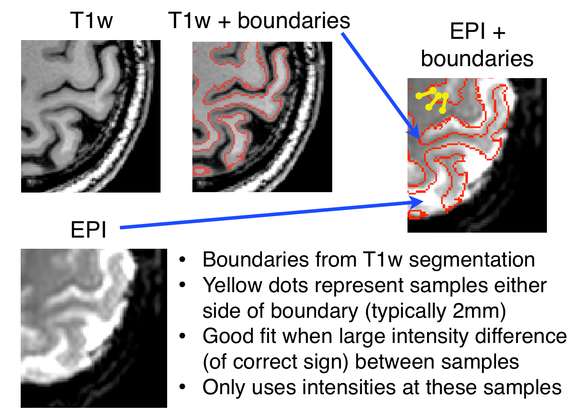

BBR - Boundary-Based Registration
Introduction
- A new tool for EPI to structural registration proposed by Doug Greve (MGH, Boston)
Greve & Fischl, NeuroImage, 48(1), 2009
in FSL5 there is a new implementation in FLIRT (the default in FEAT)
incorporates simultaneous fieldmap correction (previously done with FUGUE)
The method is based on white-matter boundaries and the fact that it is expected to see reliable changes in intensity across this boundary in the functional MR images, whereas the exterior grey-matter boundaries tend to be less reliable. This means that:
- a segmentation of the structural is required (with some form of bias-field correction)
- there must be some grey-white intensity contrast in the EPI (though it doesn't have to be good enough for segmentation)
Since only intensities near the white-matter boundary are used by BBR, it is likely to be more robust to a range of pathologies and artefacts in the EPI or the structural.
How it works
The white-matter boundary is mapped to the EPI image (usually using a 6 DOF transformation) and then samples of the EPI intensity are taken at a distance (default of 2mm) either side of points along this boundary (see Figure 1). The difference between the intensities in each pair is used to calculate the cost function. To prevent it being unduly influenced by outliers, the difference is run through a sigmoid-like non-linear function to suppress the effect of very large differences. The sign of the difference is also important and it is set-up to expect a higher intensity in the grey-matter in the EPI.

Figure 1
The implementation in FLIRT can be configured to give the user control of many of these parameters (e.g. --bbrtype, --bbrslope), and it also has simultaneous fieldmap-based distortion-correction built into it. For this application it is necessary to have the fieldmap data aligned with the structural image, and this is typically done with a simple 6 DOF registration prior to using BBR (since both the fieldmap and structural image are effectively non-distorted). The script epi_reg is provided to handle this registration and other details of working with fieldmaps for this type of registration.
Results obtained using BBR are usually substantially better than alternative methods available with FLIRT and this is now the strongly recommended way to register EPI and structural images. Viewing the transformed EPI with an overlay of the white-matter boundaries (as shown in Figure 1 above) is a very good way to assess the accuracy of the registration.